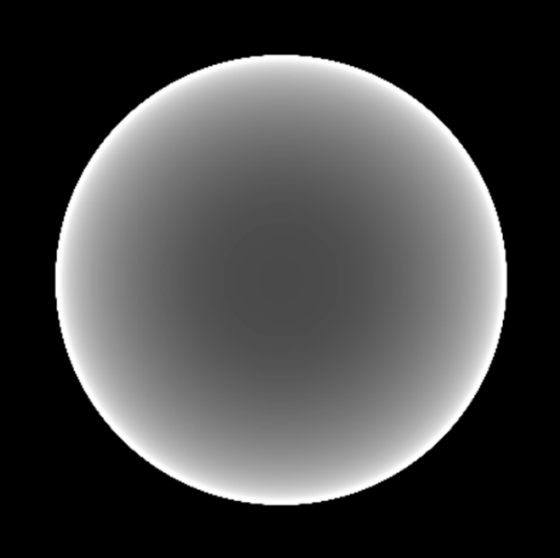
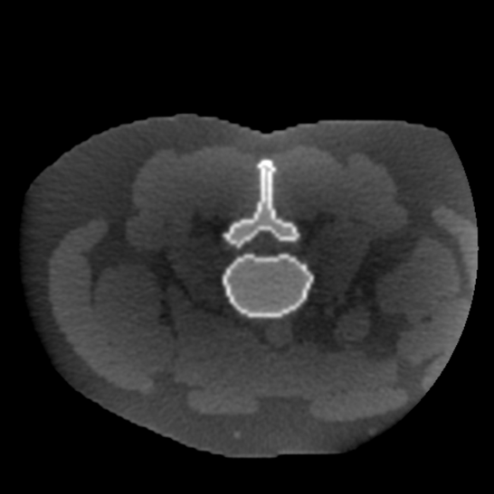
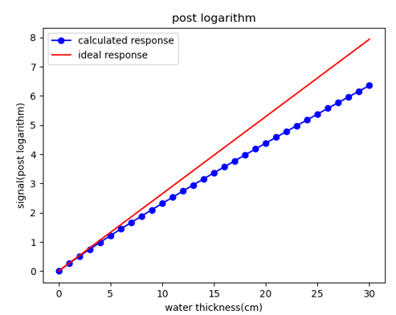

杯状伪影 (Cupping artifact)
1. 伪影的表现形式
杯状伪影表现为重建图像中，由四周向图中心的值下降，这也是 Cupping 名称的由来。主要由以下两种类型：
- 水束硬化引起的杯状 (Water beam-hardening)， 如下图1. 左，为 16cm 模拟水模发生的水束硬化。
- 散射引起的杯状 (Scatter)， 如下图1. 右，为散射引起的杯状。


2. 伪影的产生原因
水束硬化 (Water beam-hardening)
什么是硬化？
在 X 光谱通过厚度逐渐增加的水模时，总体能量下降，但整个光谱各能量会逐渐向高能移动，这种现象被称为 ”光束硬化“ (beam hardening)1。
- 下面我们从公式角度出发，分析光束硬化带来的影响：
考虑一个能发射单能 X 射线的理想光源，且入射路径中只穿过一种类型的物质，它服从比尔朗伯定律 (Beer-Lambert law)：
\[
I=I_0e^{-\int\mu{(E,S)}ds}\tag{1}
\]
其中，\(I\) 为探测器收到的能量积分，\(I_0\) 为光源射出能量积分，\(\mu_{E,S}\) 为射线穿过的物体衰减系数 (物体衰减系数在哪获得？)。重建时，postlog 值 \(I_p=-ln(\frac{I}{I_0})\)。显然，\(I_p\) 与 \(\mu_{E,S}\) 之间为线性关系。
当理想单能 X 射线变为X 光谱时，比尔朗伯定律变为：
\[
I = I_0\int\Omega(E)e^{-\int\mu{(E,S)}ds}dE\tag{2}
\]
显然，\(I_p\) 与 \(\mu_{E,S}\) 之间不再满足线性关系，无论射线穿过物质路径长度是多少，测量得到的投影值 \(I_p\) 总是小于真实值。

散射 (Scatter)
- waiting
注意
????
3. 矫正方案
由水束硬化和散射引起的杯状伪影原因并不相同，故需要不同的处理方案：
矫正方案：水束硬化
矫正方案：散射
[注]：以上图片来自 ICRP 110 数字体模投影，模拟投影以及小动物 CT，仅供学习参考
-
Jiang H . Computed Tomography Principles, Design, Artifacts, and Recent Advances, 2nd Edition[M]. 2009. P271. ↩